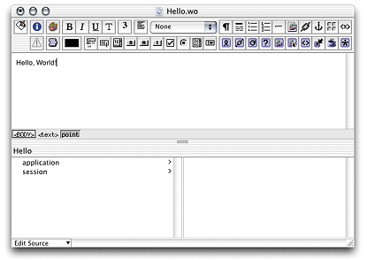
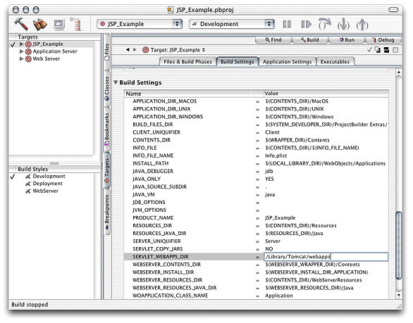
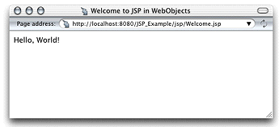

| PATH |

This section shows you how to create a simple JSP-based WebObjects
application. In it you learn how to use the <wo:component> tag
in a JSP page.
Figure 3-1 The Hello component in WebObjects Builder
SERVLET_WEBAPPS_DIR build
setting and enter the path of your servlet container's application
directory, as shown in Figure 3-2.Figure 3-2 Telling Project Builder where to put the WAR file
<%-- Welcome.jsp --%>
<%@ taglib uri="/WOtaglib" prefix="wo" %>
<HTML>
<HEAD>
<TITLE>Welcome to JSP in WebObjects</TITLE>
</HEAD>
<BODY>
<wo:component className="Hello">
</wo:component>
</BODY>
</HTML> Welcome.jsp in
the jsp directory.You should now be able to connect to your application. In Tomcat, you use the following URL:
http://localhost:8080/JSP_Example/jsp/Welcome.jsp
A page similar to the one in Figure 3-3 should appear in your browser. (Otherwise, consult your servlet container's documentation to make sure that it's configured properly.)
Figure 3-3 The output of Welcome.jsp
